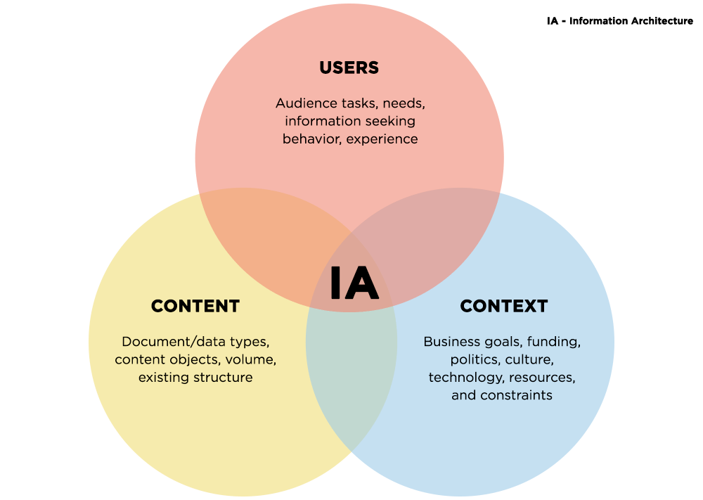

Content and Information Architecture
Prioritize clear organization, metadata consistency, and ease of access for both users and developers.
Priority:
Implement a structured and intuitive content organization system.
Why Advocate for This:
A well-organized content and information architecture makes it easier for users to find what they need quickly. This involves categorizing content logically, implementing effective metadata schemes, and ensuring that information is searchable and accessible. Clear and intuitive navigation structures enhance the overall user experience and increase engagement.
Focus areas include:
- Hierarchical Structuring: Organize content logically for easy navigation.
- Metadata and Tagging: Enhance searchability and retrieval through standardized metadata.
- Consistency: Apply uniform naming conventions and formatting to maintain clarity.
- Integration: Seamlessly incorporate APIs or other external data sources to enrich content.